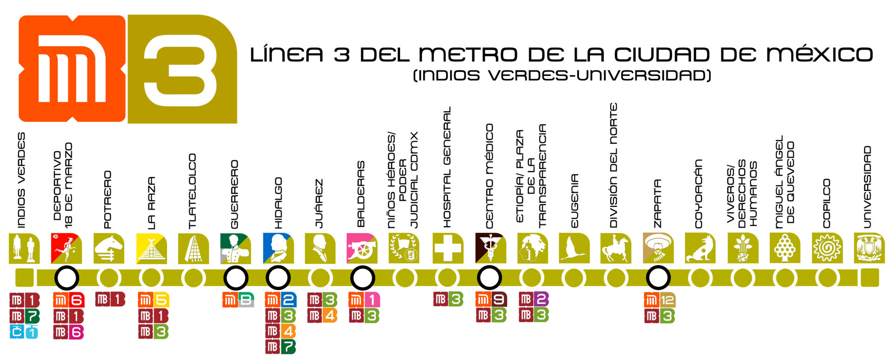

|
| Actualmente, el metro de la CDMX cuenta con un total de 12 lineas, las cuales estan repartidas por la CDMX y las cuales son: |
LINEA 1 |
LINEA 2 |
|
La linea 1 o tambien la linea rosa, es la mas antigua de todas, ya que su contrucción empezo en el año de 1967 y finalizo la primera etapa en 1969, de Zaragosa a Chapultepec. La última ampliacion que tuvo la linea 1, fue en el año de 1984, donde se inaguro la que actualmente es la estación con más transbordos, Pantitlán. Teniendo como terminales Pantitlán-Observatorio Cuenta con con un total de 20 estaciones, las cuales, 7 de ellas son correspondecia con otras lineas y 18 km de vias. Teniendo como referencia el periodo enero-marzo 2023, la linea rosa es usada por 14,921,911 usuarios, siendo Observatorio la estación con mayor afluencia de usuarios. Actualmente, la linea 1 esta siendo remodelada en su totalidad, teniendo el primer tramo acabado, el cual era de Pantitlan a Isabel la Católica. El segundo tramo esta siendo remodelado y va de Salto del Agua a Observatorio |
La linea 2 tambien reconocida como la linea azul, es la linea mas usada de toda la red del metro, con una afluencia de 47,663,044 usuarios. Va de Cuatro Caminos-Tasqueña, con una longitud de 20 km y un total de 24 estaciones, siendo 6 de correspondencia. Fue la segunda linea en construirse, en el año de 1970, de Tasqueña-Pino Suárez y siendo Pino Suaréz la primera correspondecia de toda la historia del metro. El 20 de octubre de 1975, ocurrio el primer gran incidente fatal en la historia del metro, ya que en la estación viaducto, el tren número 10 que transportaba a 130 pasajeros, se estrelló con el número ocho a una velocidad de 70 kilómetros por hora, el cual se encontraba estacionado en las vías de la estación Viaducto. El accidente le quitó la vida a 31 personas, así como heridas de gravedad a otras 70 personas, de acuerdo con las cifras oficiales. El accidente ocurrió poco después de las 9:40 de la mañana en el andén con dirección a Tasqueña. |

Presione la imagen para mas informacion |

Presion la imagen para mas informacion |
LINEA 3 |
LINEA 4 |
|
La famosa linea verde o tambien la linea 3. Esta va de Indios Verdes-Universidad contando con una longitud de 23 km y con un total de 21 estaciones, las cuales, 7 son de correspondecia Como nos podemos imaginar, fue la tercera linea en construirse, formando un "tridente" con las lineas 1 y 2, siendo las tres con mayor afluencia de la red. Su primer tramo fue inagurado en el año de 1970 e iba de Tlatelolco-Hospital general. Como dato curioso, las tres primeras lineas fueron inaguradas por el polémico presidente, Gustavo Días Ordaz, quien es recordado por muchos por la matanza de Tlatololco y la prohibición de varios grupos sociales |
La linea 4, la menos usada de toda la red ;( con una afluencia de 6,568,163 usuarios. Va de Santa Anita-Martin Carrera, ambas de correspondencia, cuenta con un total de 10 estaciones, 6 de correspondencia, y una longitud de 10 km. Fue la primera linea del metro en utilizar un viaducto elevado para la totalidad de la linea Durante la contrucción de la estación talisman, fueron encontrados los resto de un mamut adulto, especie que vivió en el norte del Continente Americano durante el período del Pleistoceno o Edad del Hielo. Sus restos se encuentran expuestos en la misma estación, la cual, lleva un mamut como iconografía. |

Presione la imagen para mas informacion |

Presion la imagen para mas informacion |